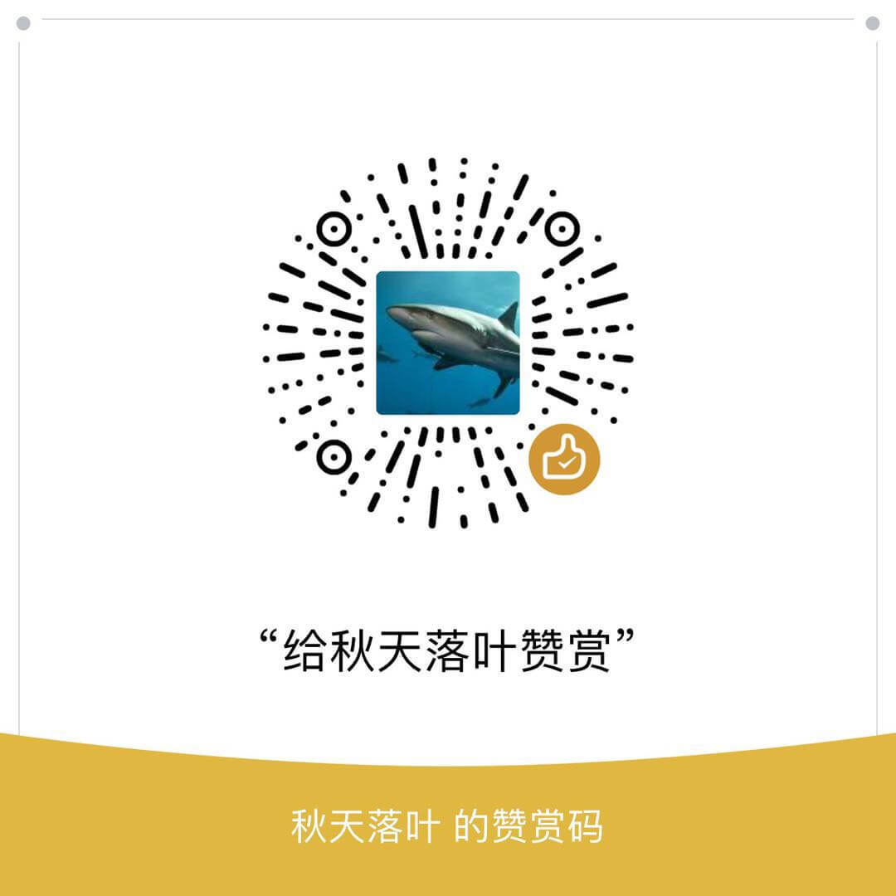

<!DOCTYPE HTML>
<html lang>
<head><meta name="generator" content="Hexo 3.8.0">
    <!--Setting-->
    <meta charset="UTF-8">
    <meta name="viewport" content="width=device-width, user-scalable=no, initial-scale=1.0, maximum-scale=1.0, minimum-scale=1.0">
    <meta http-equiv="X-UA-Compatible" content="IE=Edge,chrome=1">
    <meta http-equiv="Cache-Control" content="no-siteapp">
    <meta http-equiv="Cache-Control" content="no-transform">
    <meta name="renderer" content="webkit|ie-comp|ie-stand">
    <meta name="apple-mobile-web-app-capable" content="黄伟梁个人博客">
    <meta name="apple-mobile-web-app-status-bar-style" content="black">
    <meta name="format-detection" content="telephone=no,email=no,adress=no">
    <meta name="browsermode" content="application">
    <meta name="screen-orientation" content="portrait">
    <link rel="dns-prefetch" href="http://yoursite.com">
    <!--SEO-->

    <meta name="keywords" content="前端">


    <meta name="description" content="前言了解IOS开发的一个简单流程，如果要实现一个IOS调试APP，自已可以动手完成
一、准备工作Xcode 软件下载

App store （对mac系统版本有要求）

苹果开发者中心下载官网地...">


<meta name="robots" content="all">
<meta name="google" content="all">
<meta name="googlebot" content="all">
<meta name="verify" content="all">

    <!--Title-->


<title>拖拽实现一个IOS demo | 黄伟梁个人博客</title>


    <link rel="alternate" href="/atom.xml" title="黄伟梁个人博客" type="application/atom+xml">


    <link rel="icon" href="/favicon.ico">

    


<link rel="stylesheet" href="/css/bootstrap.min.css?rev=3.3.7">
<link rel="stylesheet" href="/css/font-awesome.min.css?rev=4.5.0">
<link rel="stylesheet" href="/css/style.css?rev=@@hash">


    
	<div class="hide">
		<script type="text/javascript">
			var cnzz_protocol = (("https:" == document.location.protocol) ? " https://" : " http://");document.write(unescape("%3Cspan class='cnzz_stat_icon_1263868967 hide' %3E%3Cscript%20src%3D%22https%3A%2F%2Fs95.cnzz.com%2Fz_stat.php%3Fweb_id%3D1272564536%22%3E%3C%2Fscript%3E%3C/span%3E%3Cscript src='" + cnzz_protocol + "s19.cnzz.com/z_stat.php%3Fid%3D1263868967%26show%3Dpic1' type='text/javascript'%3E%3C/script%3E"));
		</script>
	</div>


    <script>
        var _hmt = _hmt || [];
        (function() {
            var hm = document.createElement("script");
            hm.src = "https://hm.baidu.com/hm.js?17c942ddf91b0769181a93cc8cad738c";
            var s = document.getElementsByTagName("script")[0];
            s.parentNode.insertBefore(hm, s);
        })();
    </script>


    

</head>

</html>
<!--[if lte IE 8]>
<style>
    html{ font-size: 1em }
</style>
<![endif]-->
<!--[if lte IE 9]>
<div style="ie">你使用的浏览器版本过低，为了你更好的阅读体验，请更新浏览器的版本或者使用其他现代浏览器，比如Chrome、Firefox、Safari等。</div>
<![endif]-->

<body>
    <header class="main-header" style="background-image:url(/./img/header.jpg)">
    <div class="main-header-box">
        <a class="header-avatar" href="/" title="huangweiliang">
            
        </a>
        <div class="branding">
        	<!--<h2 class="text-hide">Snippet主题,从未如此简单有趣</h2>-->
            
                <h2> 用心做好每一件事 </h2>
            
    	</div>
    </div>
</header>
    <nav class="main-navigation">
    <div class="container">
        <div class="row">
            <div class="col-sm-12">
                <div class="navbar-header"><span class="nav-toggle-button collapsed pull-right" data-toggle="collapse" data-target="#main-menu" id="mnav">
                    <span class="sr-only"></span>
                        <i class="fa fa-bars"></i>
                    </span>
                    <a class="navbar-brand" href="http://yoursite.com">黄伟梁个人博客</a>
                </div>
                <div class="collapse navbar-collapse" id="main-menu">
                    <ul class="menu">
                        
                            <li role="presentation" class="text-center">
                                <a href="/"><i class="fa "></i>首页</a>
                            </li>
                        
                            <li role="presentation" class="text-center">
                                <a href="/tags/前端/"><i class="fa "></i>前端</a>
                            </li>
                        
                            <li role="presentation" class="text-center">
                                <a href="/tags/后端/"><i class="fa "></i>后端</a>
                            </li>
                        
                            <li role="presentation" class="text-center">
                                <a href="/tags/其他/"><i class="fa "></i>其他</a>
                            </li>
                        
                            <li role="presentation" class="text-center">
                                <a href="/archives/"><i class="fa "></i>时间轴</a>
                            </li>
                        
                    </ul>
                </div>
            </div>
        </div>
    </div>
</nav>
    <section class="content-wrap">
        <div class="container">
            <div class="row">
                <main class="col-md-8 main-content m-post">
                    <p id="process"></p>
<article class="post">
    <div class="post-head">
        <h1 id="拖拽实现一个IOS demo">
            
	            拖拽实现一个IOS demo
            
        </h1>
        <div class="post-meta">
    
        <span class="categories-meta fa-wrap">
            <i class="fa fa-folder-open-o"></i>
            
        </span>
    

    
        <span class="fa-wrap">
            <i class="fa fa-tags"></i>
            <span class="tags-meta">
                
                    <a class="tag-link" href="/tags/前端/">前端</a>
                
            </span>
        </span>
    

    
        
        <span class="fa-wrap">
            <i class="fa fa-clock-o"></i>
            <span class="date-meta">2019/05/23</span>
        </span>
        
            <span class="fa-wrap">
                <i class="fa fa-eye"></i>
                <span id="busuanzi_value_page_pv"></span>
            </span>
        
    
</div>
            
            
    </div>
    
    <div class="post-body post-content">
        <h3 id="前言"><a href="#前言" class="headerlink" title="前言"></a>前言</h3><p>了解IOS开发的一个简单流程，如果要实现一个IOS调试APP，自已可以动手完成</p>
<h3 id="一、准备工作"><a href="#一、准备工作" class="headerlink" title="一、准备工作"></a>一、准备工作</h3><p>Xcode 软件下载</p>
<ol>
<li><p>App store （对mac系统版本有要求）</p>
</li>
<li><p>苹果开发者中心下载<a href="https://developer.apple.com/" target="_blank" rel="noopener">官网地址</a> （可针到自已mac系统下载对应版本）</p>
<p>（1）登录开发者中心</p>
<p></p>
<p></p>
<p>（2） 根据自已mac版本下载对应xcode版本</p>
<p></p>
<p></p>
<p></p>
</li>
</ol>
<h3 id="二、-新建项目"><a href="#二、-新建项目" class="headerlink" title="二、 新建项目"></a>二、 新建项目</h3><ol>
<li><p>打开xcode创建一个新项目</p>
<p></p>
</li>
<li><p>选择编程语言Objective-C</p>
<p></p>
</li>
<li><p>新建完成</p>
<p></p>
</li>
</ol>
<h3 id="三、-实现demo"><a href="#三、-实现demo" class="headerlink" title="三、 实现demo"></a>三、 实现demo</h3><h3 id="四、调试"><a href="#四、调试" class="headerlink" title="四、调试"></a>四、调试</h3><h3 id="参考资料"><a href="#参考资料" class="headerlink" title="参考资料"></a>参考资料</h3>
    </div>
    
        <div class="reward" ontouchstart>
    <div class="reward-wrap">赏
        <div class="reward-box">
            
            
                <span class="reward-type">
                    <b>微信打赏</b>
                </span>
            
        </div>
    </div>
    <p class="reward-tip">赞赏是不耍流氓的鼓励</p>
</div>


    
    <div class="post-footer">
        <div>
            
                转载声明：商业转载请联系作者获得授权,非商业转载请注明出处 © <a href target="_blank">HuangWeiLiang</a>
            
        </div>
        <div>
            
        </div>
    </div>
</article>

<div class="article-nav prev-next-wrap clearfix">
    
        <a href="/2019/07/09/nodejs实现脚手架/" class="pre-post btn btn-default" title="nodejs实现脚手架">
            <i class="fa fa-angle-left fa-fw"></i><span class="hidden-lg">上一篇</span>
            <span class="hidden-xs">nodejs实现脚手架</span>
        </a>
    
    
        <a href="/2019/05/07/git工作流/" class="next-post btn btn-default" title="git工作流">
            <span class="hidden-lg">下一篇</span>
            <span class="hidden-xs">git工作流</span><i class="fa fa-angle-right fa-fw"></i>
        </a>
    
</div>


    <div id="comments">
        
	
    <div id="vcomments" class="valine"></div>
    <script src="//cdn1.lncld.net/static/js/3.0.4/av-min.js"></script>
<script src="/assets/valine.min.js"></script>

    <script>
        new Valine({
            av: AV,
            el: '#vcomments',
            appId: 'rCmbafal7DVFVWvGPCes5hrS-gzGzoHsz',
            appKey: 'UNq94EexLuc135yINegXz3sg',
            placeholder: '说点什么吧',
            notify: false,
            verify: false,
            avatar: 'mm',
            meta: 'nick,mail'.split(','),
            pageSize: '10',
            path: window.location.pathname,
            lang: ''.toLowerCase()
        })
    </script>


    </div>


                </main>
                
                    <aside id="article-toc" role="navigation" class="col-md-4">
    <div class="widget">
        <h3 class="title">文章目录</h3>
        
            <ol class="toc"><li class="toc-item toc-level-3"><a class="toc-link" href="#前言"><span class="toc-text">前言</span></a></li><li class="toc-item toc-level-3"><a class="toc-link" href="#一、准备工作"><span class="toc-text">一、准备工作</span></a></li><li class="toc-item toc-level-3"><a class="toc-link" href="#二、-新建项目"><span class="toc-text">二、 新建项目</span></a></li><li class="toc-item toc-level-3"><a class="toc-link" href="#三、-实现demo"><span class="toc-text">三、 实现demo</span></a></li><li class="toc-item toc-level-3"><a class="toc-link" href="#四、调试"><span class="toc-text">四、调试</span></a></li><li class="toc-item toc-level-3"><a class="toc-link" href="#参考资料"><span class="toc-text">参考资料</span></a></li></ol>
        
    </div>
</aside>

                
            </div>
        </div>
    </section>
    <footer class="main-footer">
    <div class="container">
        <div class="row">
        </div>
    </div>
</footer>

<a id="back-to-top" class="icon-btn hide">
	<i class="fa fa-chevron-up"></i>
</a>


    <div class="copyright">
    <div class="container">
        <div class="row">
            <div class="col-sm-12">
                <div class="busuanzi">
    
        访问量:
        <strong id="busuanzi_value_site_pv">
            <i class="fa fa-spinner fa-spin"></i>
        </strong>
        &nbsp; | &nbsp;
        访客数:
        <strong id="busuanzi_value_site_uv">
            <i class="fa fa-spinner fa-spin"></i>
        </strong>
    
</div>

            </div>
            <div class="col-sm-12">
                <span>Copyright &copy; 2019
                </span> |
                <span>
                    huangweiliang
                </span>
            </div>
        </div>
    </div>
</div>


    <script async src="//busuanzi.ibruce.info/busuanzi/2.3/busuanzi.pure.mini.js"></script>


<script src="/js/app.js?rev=@@hash"></script>

</body>
</html>